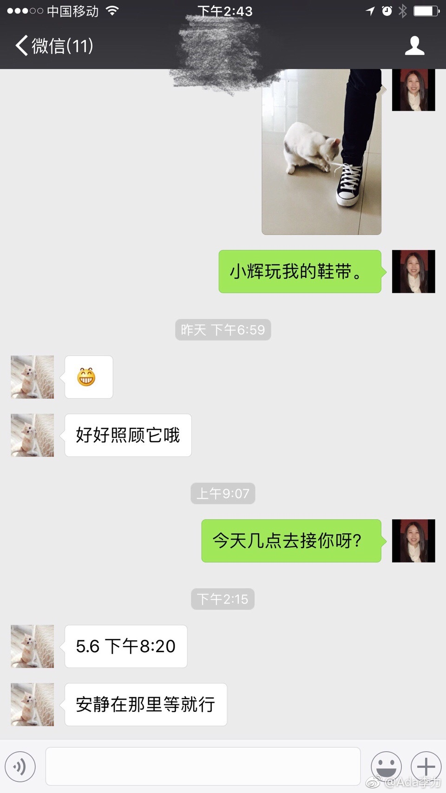

#姣姣# 这周去山西游学一周，带了个不支持3G，4G的旧手机。出发时坐上大巴就开始短信电话哀嚎让我给她充流量，解释了好几次才让她接受手机上网极慢的现实。
至于游学中需要一些资料的查找，我承担了人肉搜索的功能，用短信将结果发给她。
姣姣说晚上用酒店的WI-FI上网也一样很慢。所以，感觉这些天闺女跟我的对话，很高冷的姿态呢。都是不能痛快上网闹的。
至于游学中需要一些资料的查找，我承担了人肉搜索的功能，用短信将结果发给她。
姣姣说晚上用酒店的WI-FI上网也一样很慢。所以，感觉这些天闺女跟我的对话，很高冷的姿态呢。都是不能痛快上网闹的。

- 